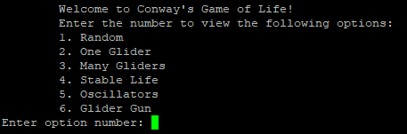

Projects
This is a workout tracker app in which the goal is to inspire people to achieve goals and be accountable by being able to share such goals with peers in the social networking part of the app.
This was completed in a group of my three other peers. I played a main role in frontend development, API design, and team leadership.


- Backend on Spring Boot
- Frontend on Android Studio
- Several features include:
- REST API
- Websockets
- GitLab CI/CD
- Espresso Testing
- DBMS/Project Planning
- Developed with 4 week sprints
The video below is a short demo and narration of the apps features.
Developed in C and ported to C++, I made a proceduraly generated Pokemon game. My game involved generating maps for the player to walk around on, AI trainers, pokemarts (shops), pokecenters (healing), an inventory system, battling, using items, leveling system, and many other features similar to other Pokemon games. Also, implemented well known algorithms such as Dijkstra's Algorithm (Shortest Path Algorithm).
- Key features:
- C
- C++
- Databases
- Porting
- Complex Algorithm Implementation
- Implementation Based Off Specification

This screenshot below shows one small cell on the 512x512 grid that the game generates. This fits the patterns of many traditional Rougue like games. Different characters represent different biomes or buildings. Different white letters represent different NPC's that have pathfinding to the player (@)
Developed in Python and using a few pre-trained data sets, I familiarized myself with the OpenCV Framwork. My program will track every persons face on visible on the systems default camera and draw shapes and other filters on their faces live. Additionally, my program tracks, marks, and labels everyone in frame. The pre-trained data-set I used is primarly for forward-facing faces, so I may be looking into making this more versatile in the future.
- Key features:
- Python
- OpenCV

Will update the information for this project soon! Contact me if you would like to know more quicker.
Will update the information for this project soon! Contact me if you would like to know more quicker.
Will update the information for this project soon! Contact me if you would like to know more quicker.
This project started just because I thought it was fun. It ended up goind into researching algorithms and the Turing Complete nature of the deterministic rules in this game.
Rules:
- Any live cell with fewer than two live neighbors dies, as if by underpopulation.
- Any live cell with two or three live neighbors lives on to the next generation.
- Any live cell with more than three live neighbors dies, as if by overpopulation.
- Any dead cell with exactly three live neighbors becomes a live cell, as if by reproduction.
These rules can form many formations such as gliders, oscillators, and spaceships which can be used to make AND, OR, and NOT gates. This makes these structures functionally complete and you can theoretically make a computer within this game.
For this project, I explored building the game and many known structures.
For more information, Wikipedia offers many graphics and more in-depth (for Wikipedia) explanations of the structures. Wikipedia - Conway's Game of Life
Patterns like this sparked my interest (from the Wikipedia):

So, I looked into how you actually can make computer architecture all with these patterns utilizing th glider guns and various oscillators. So, I put together a C++ program to try it out myself.
Note: My program simulates the movement like the gif above, the screenshot I took does not convey this.
Discord Tic-Tac-Toe Bot
Working with the Discord API, I developed a python-based project where users can play in their Discord server. This project was completed during highschool and was one of my first looks at API documentation.
Screenshots below show briefly how the bot worked.


This simple webpage is made with just HTML, CSS, and Bootstrap. The goal is to have something unique to show my development skills.
- Key features:
- HTML
- CSS
- Bootstrap
- Running a website on a live server